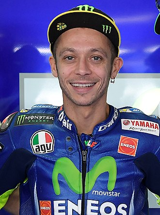
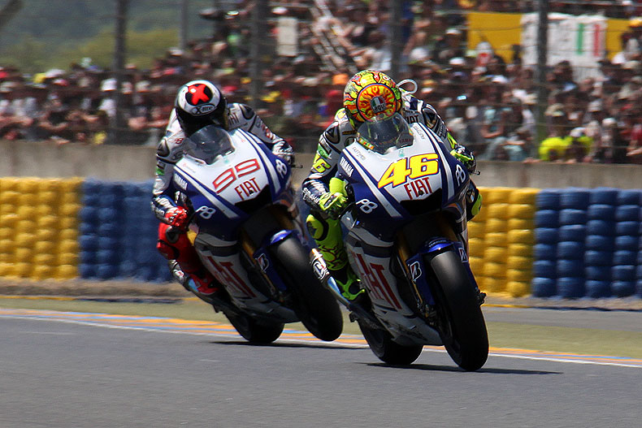
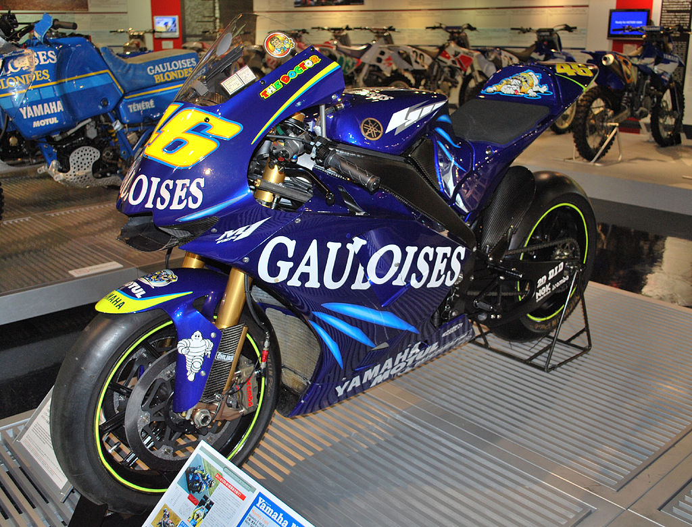
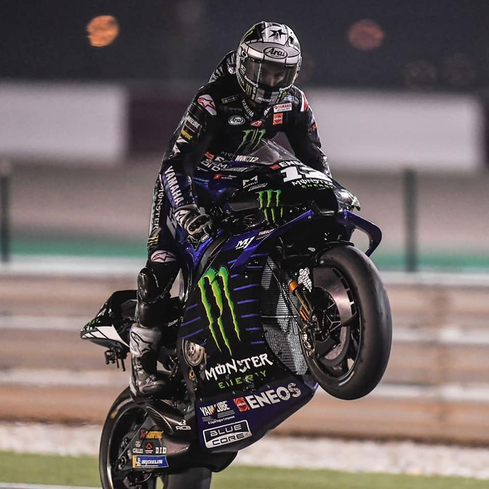
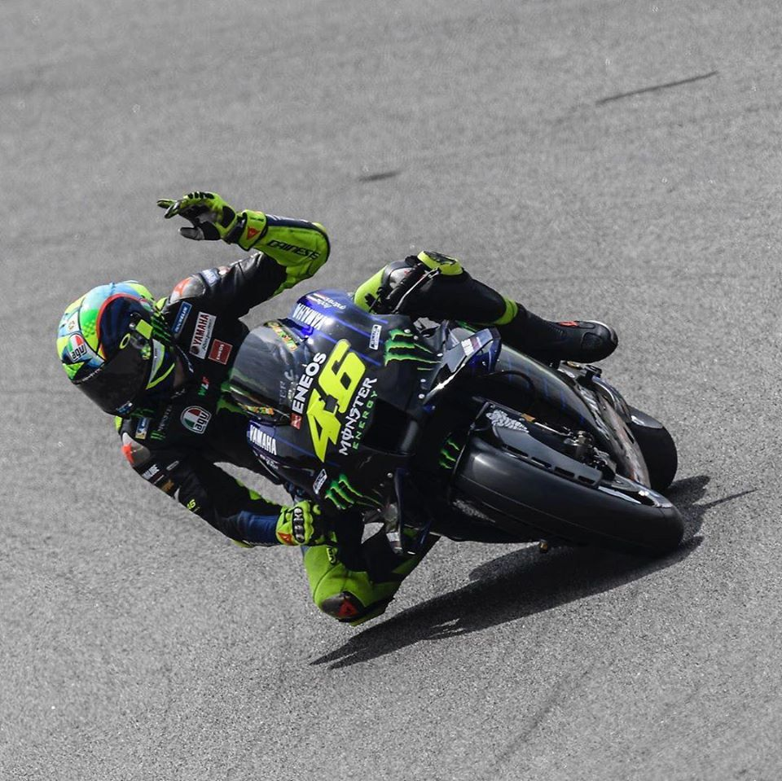
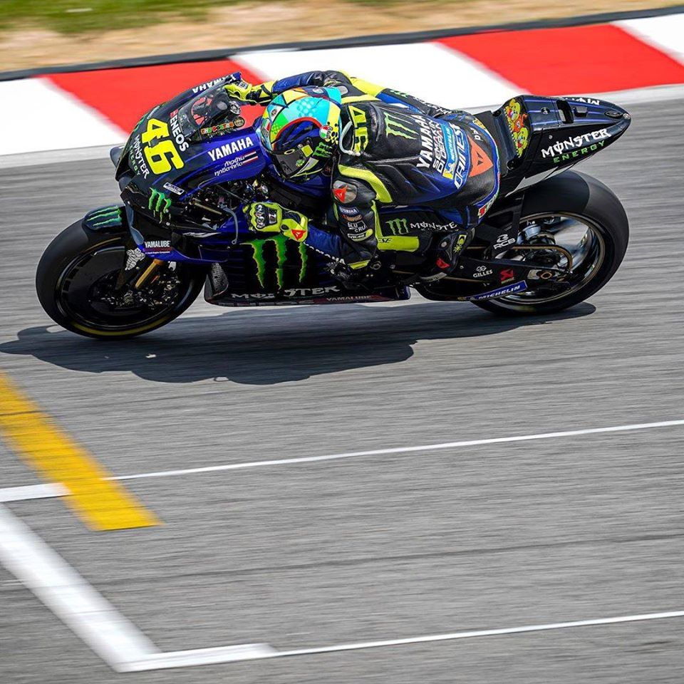
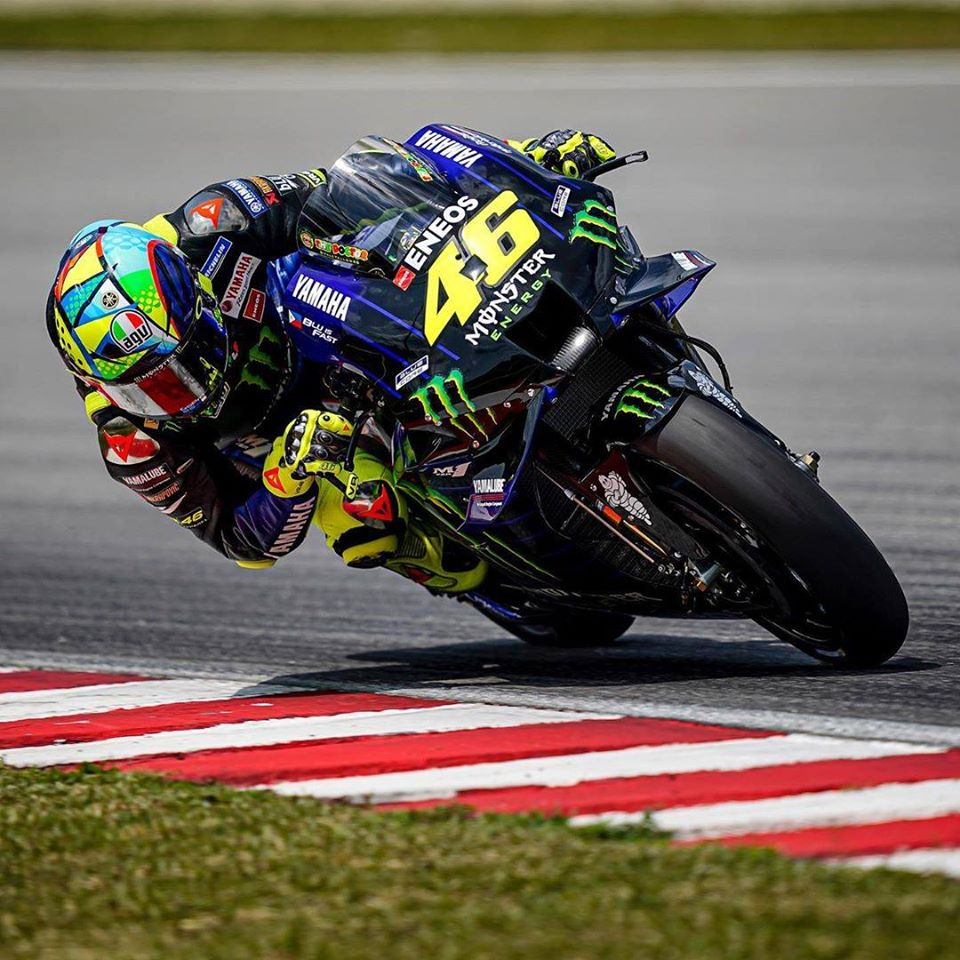

Sākums

Rossi is widely considered to be the greatest motorcycle racer of all time,
with nine Grand Prix World Championships to his name – seven of which are in the premier class.
Rossi is also the only road racer to have competed in 400 or more Grands Prix.
He has ridden with number 46 his entire career, also when being the title defender.
After graduating to the premier class in 2000, Rossi won the 500cc World Championship and
8 Hours of Suzuka with Honda in 2001, the MotoGP World Championships (also with Honda)
in 2002 and 2003 and continued his streak of back-to-back championships by winning the 2004 and
2005 titles after leaving Honda to join Yamaha. All of those titles were won in a dominant manner,
being decided before the final round on all occasions. He lost the 2006 title with a crash in the
final round at Valencia, ceding the title to his former Honda teammate Nicky Hayden. In 2007 Rossi
and Yamaha were of no match to a dominant Casey Stoner on a Ducati, and Rossi ultimately finished
a then career-low third overall.
Rossi regained the title in 2008 following several tight duels with title defendant Stoner and retained
it in 2009. After a 2010 marred by a broken leg and no title challenge, Rossi left Yamaha to
join Ducati for the 2011 season. Rossi replaced Stoner at Ducati, who went on to win the 2011
title with Honda instead while Rossi endured a difficult spell with his compatriot marque.
It was confirmed in 2012 that he would rejoin Yamaha for the 2013 and 2014 seasons after Rossi
suffered two winless seasons while at Ducati. Click here to read more about Valentino Rossi →

Rossi's closest rival in the 2003 and 2004 seasons was Sete Gibernau, riding for the Gresini
Team Movistar Honda on a satellite RC211V in 2004 and then on an all but in name factory RC211V,
which Gibernau helped to develop, in 2005. Initially they were quite friendly in the paddock and
off – Gibernau partied on occasions with Rossi at the Italian's Ibiza villa – but a souring in
their relationship began in the 2004 season and culminated in the "Qatar Incident" that same
season when Rossi's team was penalized for "cleaning" his grid position to aid in traction,
along with Honda Pons' Max Biaggi, and both riders were subsequently forced to start from
the back of the grid.A number of teams, including Gibernau's Team Gresini
and the official Repsol Honda factory team, appealed successfully to race direction for
Rossi to be sanctioned. Rossi and his chief engineer, Jeremy Burgess, insisted that they
were doing nothing more than what many others had done before when faced with a dirty track
and Rossi accused Gibernau of being behind the move to appeal for a sanction, something
the Spaniard categorically denied.Rossi accused Gibernau in 2015 that he was "playing a dirty game".
Since then the two have not spoken and Rossi seemed to use the incident to apply psychological
pressure on Gibernau. Rumours of Rossi having sworn that after the Qatar race, which Gibernau
won while Rossi crashed out after rising to 6th position, he would do everything to make sure
that Gibernau never stood on the highest step of the podium again. However, Rossi has denied
these claims. Click here to read about Rossi's rival →
Par Mums

The Yamaha YZR-M1 is an inline-four motorcycle specifically developed by Yamaha Motor Company
to race in the current MotoGP series. It succeeded the 500 cc (31 cu in) YZR500 by the 2002 season
and was originally developed with a 990 cc (60 cu in) engine. Since then, the YZR-M1 has been
continuously developed into several iterations through the 990cc, 800cc and 1000cc eras of
Grand Prix Motorcycle Racing. 2002 was the first season which allowed 990 cc 4-strokes to be raced
alongside 500 cc 2-strokes. In a change from their V-4 YZR500, Yamaha designed the YZR-M1
(for "Mission One") with an inline-4 engine because it was the format considered to have the best
mutual balance with the frame. The new engine had 5 valves per cylinder, was fed by
carburetors and began with a displacement of 942 cc; in the second half of the season it progressed
up to the full 990 cc regulation limit.
Biaggi achieved two wins and placed second in the final standings as did Yamaha in the manufacturers' championship.
In 2003, the engine went from carburetion to fuel injection, and the engine brake control system was replaced with
an Idle Control System that automatically adjusted the throttle valve opening on two of the four cylinders to improve
stability and handling during deceleration. M1 riders were Checa, Alex Barros, Olivier Jacque, Marco Melandri,
Shinya Nakano and Norifumi Abe, and there were no wins and Yamaha came in third in the manufacturers' championship.
Click here to read more about YZR-M1 →

Regulations again changed for the 2007 season with the capacity of MotoGP machines reduced to
800 cc in an effort by the FIM to reduce the ever-increasing speeds of the 990 cc bikes (capable of well in excess
of 210 mph (340 km/h)); therefore the YZR-M1 would continue in 2007 in 800 cc form. In post-2006 and in 2007
pre-season testing, the new 800 cc equipped YZR-M1 (along with other 800 cc MotoGP bikes) has been paradoxically
quicker straight out of the box than the 990 cc version of the M1. This is by virtue of later, harder braking,
quicker handling, higher corner speeds, and more controllable traction, and as the 2007 season got under way,
the 800 cc YZR-M1 was expected to get quicker as its development continued.
The chatter that plagued the early 2006 YZR-M1 has been eliminated in the switch to 800 cc.
While the main sponsor for the Official Factory Yamaha Team switched from Camel with their distinctive yellow and
blue livery, to that of the Italian Motor Manufacturer Fiat. The team ran initially in a blue and white colour
scheme and hinted at the unusual intention of running a variety of colour schemes throughout the season.
The 2008 YZR-M1 was regarded as the best all round bike in MotoGP. Rossi won the 2008 Championship, by a record
margin and dominated podium finishes all season. Teammate Jorge Lorenzo managed a first ever Rookie win on the M1
at the Portuguese GP, and had 6 podium finishes. Many along with Rossi stated that the YZR-M1 was the best bike
of 2008 season, something that was well proven during the heated battles Rossi had with Casey Stoner on the Ducati.
Click here to read more about new YZR-M1 →
Click here to read more about new YZR-M1 →
Galerija

Photo made by Michael Williamson

Photo made by Tereza Smith

Photo made by Vanessa Wayans
Kontakti
ADRESE: Doma laukums 2, Centra rajons, Rīga